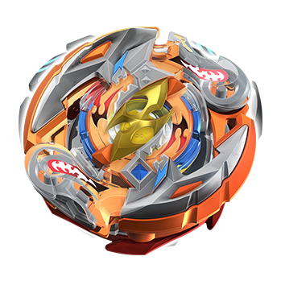
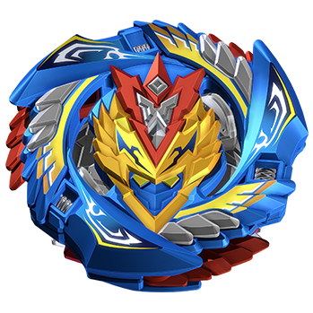

The Cartoon I Chose is Called "Beyblade Burst Turbo".
If Guys Don't Know What A Beyblade Is. I'll Show You.
This Is A Beyblade. All Beyblades are Classified as;
Attack, Defence, Stamina or Balance
Today I Am Going To Show You 9 Characters From The
Cartoon And Thier Beys*.
(*An abbreviation for
Beyblade.
Now Lets Start!
1. Laban Vanot
Laban Vanot is a character of the anime Beyblade Burst Turbo.
He fights with his Beyblade, Vise Leopard, which was destroyed by Phi,
and repaired afterward.
Name: Vise Leopard
Type: Attack
Special Move: Howling Bite
Leopard uses its powerful fangs to bite down and
grab the opponent dealing serious damage, then spins around so fast it creates
a split-second tornado to increase its throwing power to allow it to toss the
opponent at the Beystadium's floor, wall or another opponent to deal massive damage.
More About Laban Vanot
2. Phi
Phi is a character appearing in the anime and manga series,
Beyblade Burst Turbo. He fights with his Beyblade, Revive Phoenix.
Name: Revive Phoenix
Type: Defence
Special Moves:
Phoenix Break, Revive Impact, Revive Crush
Phoenix Break: Phoenix's Friction Performance
Tip's rubber edge grinds against the stadium
and gains a huge speed and power boost to deal massive damage.
Revive Impact: Phoenix jumps into the air using gravity to further increase the
speed and power of its fall to crash into the opponent's Bey with amazing force.
Revive Crush: After a big impact, Phoenix's armor ring gets knocked off.
It then crashes down on the Bey while Phoenix smashes into the Bey at the
same time, causing serious damage.
More About Phi
3. Ranjiro Kiyama
Ranjiro Kiyama, also known as Cap'n, is a character in the anime and manga series,
Beyblade Burst Turbo. He is the younger brother of Rantaro Kiyama and the founder
and leader of his own team, the Wild Bey Gang. He fights with his Beyblade, Crash Ragnaruk.

Name: Crash Ragnaruk
Type: Stamina
Special Moves: Roktavor Typhoon, Hurricane Counter, Roktavor Storm
Roktavor Typhoon: Ragnaruk uses its metal wings to generate upper force
and create a twister that repels its opponents. Hurricane Counter: Roktavor uses its Reach Disc Frame’s
spikes to counterattack a Bey if it attempts to attack.Roktavor Storm: Roktavor's wings extend out more then they usually do. And with the wings reached out it creates a major windspeed.
More About Ranjiro Kiyama
4. Suoh Genji
Suoh Genji is a character appearing in the
anime/manga series, Beyblade Burst Turbo. He was a former
member of the Beigoma Academy BeyClub, along with Fubuki Sumiye and a respected member
as well. He fights with his Beyblade, Heat Salamander.
Name:Heat Salamander
Type: Balance
Special Moves:Swirling Inferno, Rain of Swordfire, Crimson Lotus Blaze
Swirling Inferno: Using its ten blades and centrifugal force created by the Operate Performance
Tip in Defense Mode, Salamander creates a flaming tornado updraft that increases its Attack and Defense
Rain of Swordfire:Salamander flips up into the air after being attacked then falls down to counter the opponent, using gravity to
release all of its power in one big attack.Crimson Lotus Blaze: While in Defense Mode, Salamander increases its spin speed to create
an even more powerful flaming tornado updraft that massively boosts its Attack and Defense.
When his bangs move to the left, it reveals the right side of
his face, and he has a dark magenta shade zigzag mark on his right cheek.

More About Suoh Genji
5. Fubuki Sumiye
Fubuki Sumiye, in Japan, is a character appearing the anime and manga series,
Beyblade Burst Turbo. He succeeded Valt Aoi as the leader of the Beigoma Academy
BeyClub. But when he left for America, he gave the role of BeyClub leader to Valt's
younger brother, Toko Aoi. He fights with his Beyblade, Emperor Forneus.
Name: Emperor Forneus
Type: Defence
Special Moves: Emperor Guard, Emperor Drift, Ultra Emperor Drift, Emperor Crash
Emperor Guard: Forneus uses its round, 12-bladed metal Energy Layer to block and
deflect attacks.Emperor Drift:Forneus falls on the outer rim of its Yard Performance Tip, using it to drift back
around gaining speed and power to crash into its opponent, causing serious damage.Ultra Emperor Drift:Forneus
uses its outer rim to change its trajectory and increase its speed and power.Emperor Crash:Forneus uses the
opponent's power to ride upwards on the slope, then uses its outer rim to change course increasing its speed
and power, then further increases its power by riding down to deliver a massive amount of damage.
More About Fubuki Sumiye
6. Free De La Hoya
Free De La Hoya is a character appearing in the anime/manga series,
Beyblade Burst Evolution. He was initially the leader of Spanish team BC Sol
until he left and became a member of the American team, the Raging Bulls.
He eventually returned to Spain and rejoined BC Sol.Currently, he is a member of
the Big Five.He returned in Episode 25 of Beyblade Burst Turbo, with his new Turbo
Bey, Geist Fafnir until Episode 43 when it was destroyed during his
battle with Phi.
Name: Geist Fafnir
Type: Stamina
Special Moves: Geist Spin, Geist Claw, Absorb Break
Geist Spin: Fafnir uses the power it drained from its
opponent or the power of Free's launch to retract the rubber blades, becoming a
circle to create a tornado to counterattack. Geist Claw: Geist Fafnir uses the
speed from the Absorb Performance Tip and the metal on the Energy Layer to rip
at the opposing Beyblade with a powerful claw-style swipe. Absorb Break: When
Geist Fafnir gets pushed down by the opposing Beyblade, the Absorb driver's
spring gets pushed down, making contact with the stadium floor and increasing
Fafnir's speed.
More About Free De La Hoya
7. Shu Kurenai
Shu Kurenai is the secondary character of the anime and manga series,Beyblade Burst.
He currently battles with his Beyblade, Turbo Spryzen.
Name: Turbo Spryzen
Type: Balance
Special Moves:
Turbo Awakening, Turbo Crux Boost, Turbo Counter Break, Turbo Upper Launch, Turbo Spryzen Whip
Turbo Awakening: Turbo Awakening is a special mode that certain Turbo Beys have access to. When
a Beyblade top enters its Turbo Awakening state, the Energy Layers deploy the Turbo Blades, for increased combat capability.
This action also deploys dedicated Burst Stoppers. Turbo Crux Boost: Shu holds his launcher vertically behind his back in a
manner similar to his Crux Boost grip. He then jumps forward, thrusts his launcher in front of him, and quickly switches his
launcher to a horizontal position as he launches Spryzen. This gives Spryzen the speed and power needed to unlock the Turbo Awakening.
Turbo Counter Break: Using the flat edge of the Stamina Mode or Attack Mode on Zeta', Turbo Spryzen changes its trajectory and gains
speed for a powerful counterattack. Turbo Upper Launch: In left spin mode, Turbo Spryzen uses the Zeta' Performance Tip to change
Turbo Spryzen Whip: Turbo Spryzen channels its energy into its Turbo blades, slashing the opponent with a sharp edge for massive damage.
In addition, Shu is a member of the Big Five.
More About Shu Kurenai
8. Valt Aoi
Valt Aoi is the main character of the anime and manga series Beyblade Burst.
He is an enthusiastic Beyblader who founded Beigoma Academy's Beigoma Academy
BeyClub where he served as captain. He fights with His Beyblade, Turbo Valtryek.

More About Valt Aoi
9. Aiger Akabane
Aiger Akabane is the main character of the anime
and manga series, Beyblade Burst Turbo. After witnessing the strength of Valt Aoi and his Wonder Valtryek, Aiger creates his own
Turbo Beyblade, Z Achilles, and becomes a Blader. He then sets out on a
journey to the big city to challenge and defeat Valt; a goal he eventually achieved
with the dark power of his Turbo Beyblade. Over the course of his journey, Aiger
received two upgrades to his Beyblade: Z Achilles , which was destroyed
during his battle with Phi in the Dread Tower, and his new, Turbo Beyblade,
Turbo Achilles, which was made after the destruction of Z Achilles'
Energy Layer.

More About Aiger Akabane
Each Bey also has an avatar.
I'll show you all the avatars from todays Beyblades.
| Air Knight |
Turbo Achilles |
Emperor Forneus |
Heat Salamander |
Revive Phoenix |
 Vise Leopard Vise Leopard |
 Crash Rocktavor Crash Rocktavor |
Geist Fafnir |
Turbo Valtryek |
Turbo Spryzen |
.Thank You